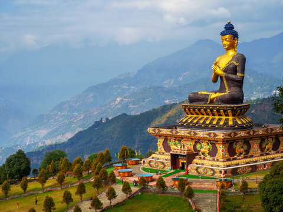
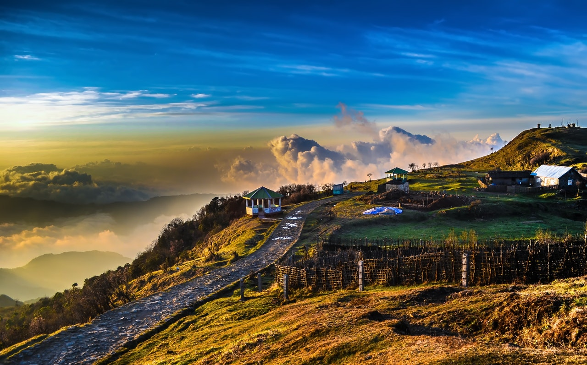
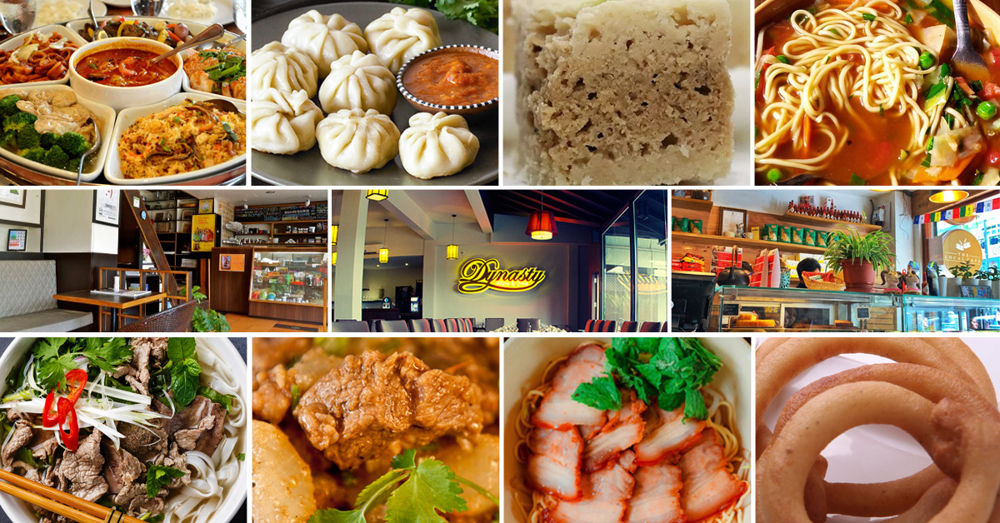
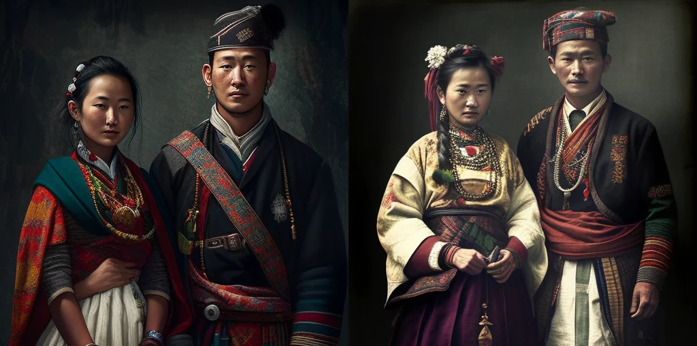

| ✧ Aspect | Information |
|---|---|
| ✧ Capital | Gangtok |
| ✧ Chief minister | Prem Singh Tamang |
| ✧ Largest City | Gangtok |
| ✧ Districts | 4 |
| ✧ Official Language | Nepali, Bhutia, Lepcha, Limbu |
| ✧ Other Language | Bhutia, Lepcha, Limbu |
| ✧ Population | Approximately 671,000 |
| ✧ Area | 7,096 square kilometers |
| ✧ Major Rivers | Teesta, Rangeet |
| ✧ Major Industries | Tourism, Agriculture, Horticulture |
| ✧ Popular Places | Nathu La Pass, Tsomgo Lake, Yuksom, Pelling |
Traditional Dresses in Sikkim includes the Bakhu for men, which is a loose gown tied at the waist, and for women, the traditional attire includes the Honju or Dumvum which is a colorful wrap-around dress. These traditional dresses are still worn on special occasions and festivals.
Sikkim, nestled in the Himalayas, has a unique and captivating history. It was once a kingdom ruled by the Namgyal dynasty and remained independent until it became a part of India in 1975. The history of Sikkim is intertwined with Buddhism and Tibetan culture.
The region saw the influence of various Tibetan kings and Buddhist lamas before it was unified under the Namgyal dynasty in the 17th century. During this time, Sikkim flourished as a Buddhist kingdom and became a center for trade and pilgrimage.
Sikkim's strategic location made it a coveted territory for neighboring powers, leading to conflicts and alliances with Tibet, Bhutan, and Nepal. In the 19th century, Sikkim signed treaties with the British East India Company, which recognized its autonomy.
In 1975, Sikkim formally became a part of India after a referendum and the abolition of the monarchy. Since then, it has thrived as one of India's smallest states, known for its stunning natural beauty, diverse culture, and vibrant festivals.



